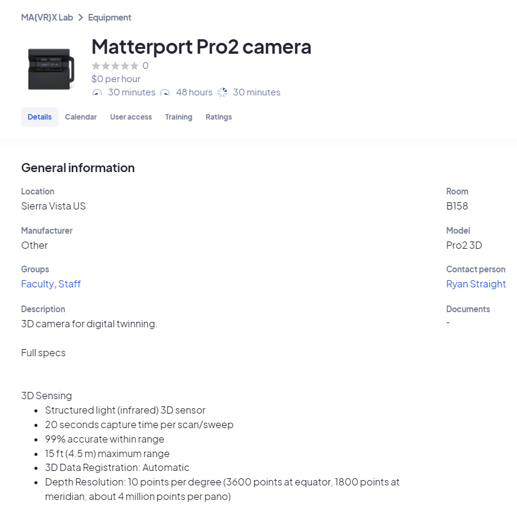
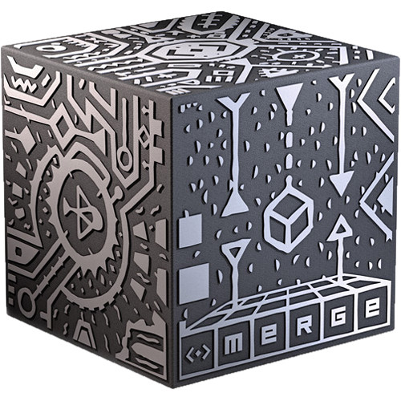
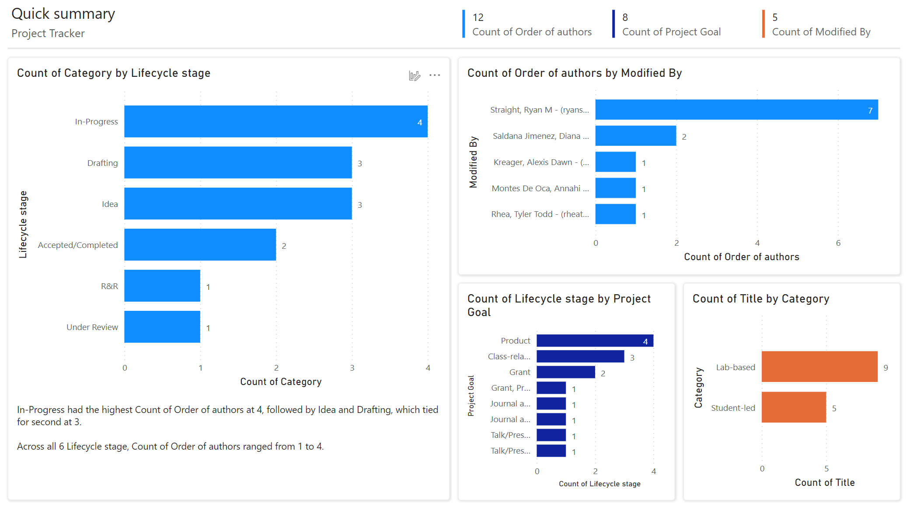
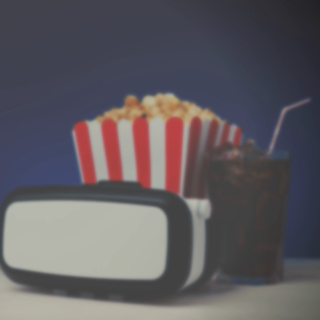

| Date | Visitors |
|---|---|
| 11/18/2021 | Chamber of Commerce and Sierra Vista Community |
| 12/10/2022 | David Dorey - PCC |
| 1/21/2022 | UA Foundation- Andy Fisher |
| 2/3/2022 | Dean Schatzberg |
| 2/4/2022 | Facilities Staff |
| 2/11/2022 | Mayor Winfield |
| 3/10/2022 | Provost and Communications Manager |
| 3/18/2022 | Elena Centeno-Garcia w/ UNAM |
| 3/31/2022 | Research Group |
| 5/4/2022 | Lab open house |
In an effort to quantify and summarize the projects and accomplishments of the lab during its first year, follows is a report that addresses a) the contractual obligations of the director and how they were fulfilled, b) the people that have been directly involved, and c) the wide range of events, projects, and public-facing exposure.
Contractual Obligations of Director
This is how the various contractual obligations Dr Straight has for directing the lab are being addressed in the 2021-22 academic year. There has been some consolidation in terms of categories and expectations to reduce redundancy within the report.
Lab Presence
These requirements focus on the lab’s presence. Charges:
- Maintaining the lab’s physical presence, virtual, and social presence
- Develop an inventory system & complete inventory
- Conducting an inventory of all assets currently maintained by the college, identifying what new technologies are needed, and develop a budget for those items.
- Manage all lab equipment to include updates and maintenance.

Completed in summer 2021 and consistently maintained as equipment moves in or out of the lab. An automated internal inventory system integrated with the purchase tracker has also been created. This is part of the deep integration approach the lab has taken with Microsoft 365’s work collaboration suite including Teams, Planner, Tasks, and Lists.
The lab also uses Clustermarket’s “Bookkit” inventory platform (see the Figure 1 screenshot for the Matterport Pro 2 camera’s page in the system). This is an invite-only, equipment/space/service booking/purchasing system. It tracks inventory, usage, maintenance time, services offered, equipment costs, and long-term checkout of equipment. Dr Straight has been collaborating with colleagues that also run labs or engage with considerable amounts of hardware to a) encourage them to use the same service, and b) connect the labs to encourage collaboration and equipment sharing.
After completing the lab’s inventory, the effort began in concert with the Applied Technology department head to update lab equipment where necessary and determine, given the lab’s general direction, what new equipment would need purchased to support internal and external projects like research studies and public-engagement events. A draft budget was developed and has been mainly successful in meeting initial needs. The director put together a collection of wants and needs, most of which were fulfilled. Budgeting in a lab of this nature is difficult due to the break-neck pace of technological advancement in the extended reality and related spaces. However, the detailed inventory tracking previously described allows the lab to keep a record of hardware release dates, purchase prices and current valuations, and wear-and-tear based on usage.
The lab, enjoying a foundation provided by previous college projects, is now in a position to let purchasing decisions be driven by faculty and student research interests, funded projects, business propositions, and customer/patron needs. More on this in the funding section.
During his weekly time in the lab (typically on Mondays), the director spends time updating hardware, firmware, and software. He occasionally would bring equipment back to Tucson to continue work throughout the week. As part of the adoption and consolidation of the variety of disparate sources into the lab, all equipment needed factory reset and updated from zero1. Additionally, lab-specific accounts across the variety of services and platforms were created for consistency and ease of use across lab team members. Assistance from the IT department was crucial.
1 Lab equipment came mostly from the Innovative Learning project and VIPER.
- Work with marketing person to confirm brand and develop and implement the Virtual / Social Presence of the VR Lab while maintaining proper branding and alignment with CAST’s overall plan. {#marketing}
The college hired a public communications specialist and a marketing specialist, both of whom have been in close collaboration to ensure the lab has official, approved branding. See Figure 2.
Additionally, for social media and other platforms where the University of Arizona association is otherwise very clear (as per Brand’s best practices)–i.e., a Twitter or YouTube homepage–a more eye-catching banner was created. See Figure 3.
The lab’s social media presence, public-facing content, and internal mission are all engineered to be in alignment with the college’s stated mission:
Preparing our students for success and helping our communities thrive.
The College of Applied Science & Technology (CAST) provides opportunities for students to earn high-quality and meaningful University of Arizona degrees at sites throughout Southern Arizona, including key border communities in Cochise and Santa Cruz Counties. CAST partners with community colleges to offer regionally-relevant transfer programs that are low cost, and geographically accessible.
More on how the lab has been supporting the local community, engaging with community colleges, and providing students with engaging academic experiences can be found in the Engagement section.
Work on making a walk-up VR experience that’s easy to jump in and out of

Established a range of these experiences, including theBlu, Supernatural, Richie’s Plank Experience, and the Merge Cube being the most popular. The method to set up the more complex experiences are outlined in the lab’s Protocols.io collection. We have established two basic kinds of quick demonstrations: with and without a headset.
With a headset: either Richie’s Plank Experience or theBlu as neither involve much movement or require learning complex controls.
Without a headset: the Merge Cube by Merge Labs, which provides an augmented reality experience with any smartphone or tablet. See Figure 4. This is the device that featured in the Herald/Review story.
Internal and External Partnership
- Partner with UROC to find undergraduate researchers and facilitate research throughout the college in connection with the VR Lab.
This was placed on hold, as per Applied Technology department head (2021 August). Given the changes in CAST undergraduate curricula and the potential PSMs and CIIO graduate programs, this will return to the forefront in 2022-23 or whenever the undergraduate-to-graduate pathway is clear. Likewise, the director and other colleagues are planning on submitting a Research Experiences for Undergraduates (REU) proposal to support “active research participation by undergraduate students in any of the areas of research funded by the National Science Foundation.” Specifically, this will be based in CIIO with a focus on extended reality, broadly considered.
- Develop a consortium by engaging college faculty, community colleges, other Universities, and government partners. Creating a regular schedule of meetings to create goals and opportunities.
In collaboration with UA-ARC, Fort Huachuca, and Bryan Carter in Digital Humanities, we’ve partnered with Optical Sciences to establish a universitywide VR group to make a solid, coherent push going forward. This is in addition to the “Digital Twinning” efforts currently in process.
- Continue weekly meetings with the UA-ARC, Huachuca, Main campus VR team.
These meetings, referred to as the “AR/VR Tag-Up series,” shifted to bi-weekly at the start of the 2022 calendar year. The director consistently attends the meetings and, in his absence, Diana Saldana would attend.
- Develop and manage community engagement events in connection with the VR Lab
Community engagement events were some of the highlights of the first year in the lab. COVID, obviously, has had an impact on this but we were still highly successful and visible. With the hiring of Dean Packard, a variety of different events were planned without the lab needing to host or manage the entire event. Details provided later in the report.
- Collaborate with the other labs in the college, university, and region.
Though the number of labs and centers related to extended reality is relatively small, throughout the first year collaborations and partnerships were established with a variety of groups as well as with other entities not strictly known as lab or center research entities:
- The Center for Digital Humanities, College of Humanities, University of Arizona (Director: Bryan Carter, Ph.D)
- Cochise College lab, Computer Information Systems and Computer Science, Cochise College (Director: Timothy McDaniel)
- Tip Lab, The SHOP Virtual Reality space, Fort Huachuca, Sierra Vista (Director: John Grant)
- Applied Research Corporation, University of Arizona (Contact: Patrick Kerr)
- Tech Core, Eller College of Management, University of Arizona (Director: Ash Black.)
Develop and maintain a plan to ensure CAST’s VR footprint.
This was accomplished through the variety of collaborations, projects, events, and student engagement, and the projects currently in-progress or planned for upcoming years.
Assist with CAST IT infrastructure plan to ensure the proper needs of the lab
With the move to B158, the IT infrastructure is sufficient for the lab. As time goes on, this may need updated. That said, as the other labs in the college are stood up and the lab moves into more infrastructurally demanding work (volumetric streaming, for example), the needs will be constantly reassessed and the IT department consulted at the earliest point possible.
Establishment of the lab
The director is the only full-time personnel with a portion of their contract devoted to running the lab. Others, through their positions in the college, assist by default. Additionally, there are student workers that have been involved in the administration and assistance of lab events and protocols.
Lab team
- Ryan Straight, Ph.D: Director
- Diana Jimenez Saldana, Ph.D: Yuma Coordinator
- Administrative Support
- Ariella McGeachy: Administrative Assistant, Applied Technology
- Paul Wagner: Department Head, Applied Technology
- Student workers
- Anthony Vega (Sierra Vista)
- Tyler Rhea (Tucson)
- Juan Carlos Alcala (Yuma)
Physical space
Originally planned for room B-154 on the Sierra Vista campus, the lab was moved to room B-158. Renovations of the campus included having the room and carpet cleaned, the walls painted, and the televisions and furniture from the old room moved. The wall-mounted sensors for head-mounted displays (HMDs) were also installed by the campus facilities crew. A large wooden grid bookshelf was moved into the space and Styrafoam heads purchased to display HMDs. Additionally, a metal locking cabinet was purchased to allow for the more expensive hardware or private documents to be kept secure.
Safety and Sanitation
The room was organized in such a way as to allow for maximum collaboration (computers being attached to large flat screen televisions, a large whiteboard nearly covering one full wall) and maximum safety and space for those wearing HMDs (tables organized to create a cordoned-off space). Posters and other paraphernalia were hung and placed around the room. Finally, safety equipment and supplies were purchased, including a “wet floor” sign, disposable emesis bags, non-alcoholic cleaning wipes, a mini-fridge to keep cold water for those who feel nauseated, and the Cleanbox for sanitizing equipment. Hand sanitizer is provided at each station and masks are required when social distancing cannot be maintained.
Administrative content developed
Starting a lab from scratch involves a considerable amount of administrative logistics, organization, and project management. It is also intended to lay the blueprint for future lab development within the college. The following are administrative and logistical content that was developed or requested by the director in order to provide a team-focused environment.
- Microsoft 365 SharePoint site
- Automated project tracker using Microsoft 365 Forms and Lists
- Automated purchase request and inventory tracker using same
- Clustermarket lab equipment reservation system
- Lab email account
- Worked with Risk Management to get legally approved waivers and safety disclaimers
Scholarly output and events
Over the first year, the lab supported the attendance or publication involving the following. More info on the particulars of these events or publications can be found on the lab’s website and/or OSF account.
- VWF 2021: Dr. Straight at Virtual Worlds Forum | MA{VR}X Lab
- OLC Accelerate 2021 conference: Technological Mediation: A Postphenomenology Primer for Instructors, Designers, and More | MA{VR}X Lab
- UNESCO panel: Simulation, Immersion, and Gamification | MA{VR}X Lab
- Director invited to keynote Cochise conference
- Director had work published at AACE SITE conference
- OLC Innovate 2022 conference: Karu: Introducing the Metaversal Library for the Future of Immersive Learning | MA{VR}X Lab
- Director invited to speak at Phoenix conference for K12 on state of AR/VR
- VWF 2022: Dr. Straight assisting in the event and presenting.
Number of projects
As of 2022-12-22, the lab has over a dozen projects either begun or completed (see Figure 5). These range from lab-initiated projects like conference proceedings and talks, grants, journal articles, and products, to student-initiated projects like senior capstones and independent studies.

Funding
Beyond the initial internal budget of $7,000 provided by CAST, a variety of funding opportunities are currently being explored. A selection:
Secure and Trustworthy Cyberspace (SaTC)
The lab is exploring the possibility of volumetric and holographic video, along with 3D object and space scanning, to deliver next-generation training and education. Specifically, this will be explored for cybersecurity education. This project will seek funding from the NSF Secure and Trustworthy Cyberspace (SaTC) Education designation with a funding amount of $500,000 over three years.
The SaTC program welcomes proposals that address cybersecurity and privacy, drawing on expertise in one or more of these areas: computing, communication, and information sciences; engineering; education; mathematics; statistics; and social, behavioral, and economic sciences. Proposals that advance the field of cybersecurity and privacy within a single discipline or interdisciplinary efforts that span multiple disciplines are both welcome.
Secure & Connected Communities (SCC)
The lab is collaborating with Digital Humanities, Applied Science, and Distance Education to receive a Secure & Connected Communities (SCC) grant. Funding amounts range from $150,000 to $2,500,000. This project
Communities in the United States (US) and around the world are entering a new era of transformation in which residents and their surrounding environments are increasingly connected through rapidly-changing intelligent technologies. This transformation offers great promise for improved wellbeing and prosperity but poses significant challenges at the complex intersection of technology and society. The goal of the NSF Smart and Connected Communities (S&CC) program solicitation is to accelerate the creation of the scientific and engineering foundations that will enable smart and connected communities to bring about new levels of economic opportunity and growth, safety and security, health and wellness, accessibility and inclusivity, and overall quality of life.
Artemizia
The lab is currently in the process of engaging with the Artemizia Foundation in Bisbee, AZ, on a community-driven augmented reality art project. While the funding amount associated with this project is relatively small at $5,000, it is intended as a proof-of-concept to approach larger opportunities like the Arizona Commission on the Arts and National Endowment for the Arts to explore the ways in which the lab can engage with communities and bring extended reality artwork to the region.
The Artemizia Foundation encompasses a contemporary, graffiti & street art museum with a commercial gallery component located in the heart of Old Bisbee.
TechLaunch
A Provost Investment Fund (PIF) was submitted in 2021 to develop a platform to support intra-organizational collaboration on various XR-related projects for students, faculty, and staff at the university. While this was ultimately not chosen for funding, the feedback stated a very clear and understood need for this type of engagement. To expand the reach of the platform, it was decided the project would be better served as a startup company. TechLaunch, the university’s business incubator, was approached. Also very encouraged and excited about the prospect, they have committed to an initial investment of $50,000 to support the initial development of the platform, to develop the organizational structure, and identify ongoing investment funding sources.
Engagement
As the college begins establishing its research footprint, the lab is taking a front-row seat in visibility, public engagement, and moves toward supporting undergraduate research.
Events supported
Beyond having the lab available to the variety of tours and visitors passing through the campus over the academic year, we also supported a number of stand-alone events. These are described below.
- Dine Under the Stars, a University South Foundation fundraiser: Virtually Dining Under the Stars | MA{VR}X Lab
- Business at Twilight, a fundraiser for local businesses and the Cochise community: Business at Twilight: Come visit the lab! | MA{VR}X Lab
- Patterson Observatory events (one community event and one fundraiser): PATTERSON OBSERVATORY | uofasfoundation
- SciTech Institute Chandler Innovation Fair: Chandler Innovation Fair | City of Chandler
SheTech
Our Marketing and Communications Director, Emily Vickers, participated in the SheTech Explorer Day, a “day-long, industry-led STEM exploration event [providing] hands-on, interactive activities in science, technology, engineering, and math (STEM) for rising 9th through 12th-grade girls.2” The lab supported this event by providing equipment and experiences that were the highlight of the event, and the lab’s table was the most popular and enjoyable experience. Further, the students that stopped to interact expressed surprise they were unaware of the lab and the programs at the college, as well as expressing interest in even changing their future career trajectories.
2 https://www.freefallaerospace.com/event/2022-shetech/
Student engagement
- Independent studies: 7 (6 internal, 1 external)
- Student workers: 3
- Capstones: 1 (4 students)
Collaborative internal projects
Augmented Reality for Public Communications and Marketing
Collaboration with the Marketing and Communications Director has resulted in adding augmented reality experiences to materials. The project began with an AR welcome video from the dean when scanning the rear of CAST business cards. The project is ongoing and will focus next on program-specific content.
Spatial Scans
Using the Matterport Pro 2 camera, we have created a number of support and educational experiences for the college and community:
- A full scan of the Arizona Folklore Preserve was requested by the department head of Applied Science to support the Regional Commerce program.
- A full scan of the Patterson Observatory with educational and informational content built in.
- A 3D scan of C building for the CIIO department to support a video wall project3
- A 3D scan of Groth Hall prior to the renovation. A second scan is planned for post-renovation.
3 The video wall was initially planned for the C building but is now to be located in the B building.
HYPERVSN’s Holographic Human
Purchased by the CIIO department, the lab has received the Holographic Human from HYPERVSN, a “life-size 3D human holographic display to demonstrate products, provide information or showcase the latest trends.” Green screen recordings of This equipment is now in the main entrance of Groth Hall.
Publicity and marketing
A variety of publicity and marketing accomplishments can be identified over the first year. We managed to procure what’s known as a “web lock-up,” which is the “official” banner (see Figure 2). The full range of banners and logos were provided by Brand. We created social media accounts and began a weekly newsletter to share news in the XR sphere and updates from the lab, itself. Beyond this, there is a variety of other public-facing engagement and media pieces.
NFTs (POAPs)

As the lab takes a broad view of “extended reality” so as to include digital identities and personas, we began issuing Web3 xDai non-fungible tokens (NFTs) as collectibles and rewards for engaging or participating in lab events or operations. Using the Proof of Attendance Protocol (POAP), these blockchain-based digital badges serve as persistent reminders of the lab’s first year and beyond.
Herald/Review story
The Cochise Herald/Review published a two-page spread about the director and the lab. It included a full-page color photo, another photo, and an interview with the director. The onlin version can be found here: CAST is diving into virtual reality with new lab | Lifestyle | myheraldreview.com
Tours and people involved
The lab has been a obligatory stop on a variety of tours conducted for VIPs and campus guests. Between November 2021 and March 2022, the lab was involved and featured in nine different tours, providing visitors information on the lab, its capabilities, and demos. These tours include:
Public-facing open science
One of the lab’s goals is to prioritize and engage in open science to the largest extent possible.
GitHub
GitHub, as the basic industry standard for sharing and collaborating on code or code-adjacent projects, is the central home for the lab’s projects. GitHub also allows for public websites and documentation based on private code repositories. Whenever there is a lab-related presentation, slide deck, or document that needs made available, they are produced in this way.
There is currently a total of 9 private repositories covering everything from the lab’s website source to the collection of lab assets like logos and banners, and storage locations for various studies and projects. These are available to the lab’s organization members. Meanwhile, there are a total of 3 fully public repositories:
meeting-notes: “Notes, agendas, and minutes from various lab-related meetings.”project-template: “A project template for forking.4”lab-manual: “The lab manual for the MA{VR}X Lab in the College of Applied Science and Technology at the University of Arizona.”
4 This includes a pre-registration template to be used via OSF.
Lab Manual
In exploring the variety of labs in other institutions of higher education, Dr. Straight collected a range of established lab handbooks that were published openly. These were used as the foundation for the lab’s own manual, which lays out the lab’s:
- structure, identity, mission, vision, and values, which are intended to support and build upon those of the University of Arizona and the College of Applied Science and Technology
- roles and expectations, including those of the PI/director, research faculty, graduate and undergraduate researchers
- onboarding process, including a baseline reading list and basic project timelines
- physical spaces and directions
- communications methods, platforms, social media, and web presence
- meeting schedule and note-taking process
- practices and protocols like documentation, lab safety, reserving lab equipment, and requesting lab services
- dissemination of products like presentations, documentation, and other published content
- authorship expectations, based on the CRediT framework
- IRB and other ethics expectations

This manual is published under a Creative Commons Attribution-NonCommercial-ShareAlike 4.0 International license (see Figure 7) and is available as a website, PDF, and an eBook. It leverages the OSF project for DOI creation.
Open Science Framework (OSF)
The OSF5, supported by the Center for Open Science, is a platform for scientists and researchers to share content in a way that is transparent, accessible, and collaborative. The lab has established an OSF Project through which open science like pre-registrations can be housed and maintained. The process for establishing new projects through the lab’s OSF home is documented in the handbook, which is linked above.
5 OSF helps document and archive study designs, materials, and data. OSF facilitates sharing of materials and data within a laboratory or across laboratories. OSF also facilitates transparency of laboratory research and provides a network design that details and credits individual contributions for all aspects of the research process. -OSF website
Protocols.io
Protocols.io is an online platform that specializes in publishing step-by-step processes regarding, especially, laboratory procedures. As some of the software and equipment in the lab requires complicated setup and, given the limited physical space available, must be setup and broken down repeatedly, having clear, transparent protocols has been invaluable. Protocols can also be linked bidirectionally to published research using DOIs, which can be generated for OSF objects.
The linked protocol (see the QR code in Figure 8 for a look at the mobile version, which is especially useful) demonstrates an 18-step process, starting from scratch, to get one of the lab’s HTC Vives connected and ready to be used.
Reuse
Citation
BibTeX citation:
@report{straight2022,
author = {Ryan Straight},
title = {MA\{VR\}X {Lab:} {Year} {One}},
number = {101/2022},
date = {2022-05-06},
url = {osf.io/f24cb},
doi = {10.17605/OSF.IO/F24CB},
langid = {en}
}
For attribution, please cite this work as:
Ryan Straight. 2022. “MA{VR}X Lab: Year One.” 101/2022. https://doi.org/10.17605/OSF.IO/F24CB.